Many data are hierarchical and we want to acknowledge the nested structure in our models. Specr can easily estimate such multilevel models. We again have to write a customized function and run_specs() will do the rest.
For this example, we will us the gapminder data set that is included in the gapminder-package. We quickly recode some variable to get more interpretable estiamtes
library(specr) library(purrr) library(dplyr) library(ggplot2) library(gapminder) # Recode some variables gapminder <- gapminder %>% mutate(gdpPercap_log = log(gdpPercap), pop = pop/1000) # Check data gapminder #> # A tibble: 1,704 x 7 #> country continent year lifeExp pop gdpPercap gdpPercap_log #> <fct> <fct> <int> <dbl> <dbl> <dbl> <dbl> #> 1 Afghanistan Asia 1952 28.8 8425. 779. 6.66 #> 2 Afghanistan Asia 1957 30.3 9241. 821. 6.71 #> 3 Afghanistan Asia 1962 32.0 10267. 853. 6.75 #> 4 Afghanistan Asia 1967 34.0 11538. 836. 6.73 #> 5 Afghanistan Asia 1972 36.1 13079. 740. 6.61 #> 6 Afghanistan Asia 1977 38.4 14880. 786. 6.67 #> 7 Afghanistan Asia 1982 39.9 12882. 978. 6.89 #> 8 Afghanistan Asia 1987 40.8 13868. 852. 6.75 #> 9 Afghanistan Asia 1992 41.7 16318. 649. 6.48 #> 10 Afghanistan Asia 1997 41.8 22227. 635. 6.45 #> # … with 1,694 more rows
For this example, we use the package lme4 and more specifically the function lmer() to estimate the multilevel model (more complex models such as poisson or negative binomial multilevel models can likewise be estimated).
Based on the data set, we want to estimate the relationship between gdpPercap (GDP per capita) and lifeExp (life expectancy). Both variables are nested within both countries and years. We create several customized lmer-functions that account for different nesting strucrures.
Several aspects are important to take into account: - You need to load lavaan within the function to be able to use lmer() - You need to load broom.mixed as the standard broom::tidy function does not work for merMod-objects.
# Random intercept model (only country as grouping variable) lmer_ri_1 <- function(formula, data,...) { require(lme4) require(broom.mixed) formula <- paste(formula, "+ (1|country)") lmer(formula, data) } # Including random slopes (only country as grouping variable) lmer_rs_1 <- function(formula, data,...) { require(lme4) require(broom.mixed) slopevars <- unlist(strsplit(formula, " ~ "))[2] formula <- paste0(formula, "+ (1 + ", slopevars, "|country)" ) lmer(formula, data) } # Random intercept model (lifeExp is nested in both countries and years) lmer_ri_2 <- function(formula, data,...) { require(lme4) require(broom.mixed) slopevars <- unlist(strsplit(formula, " ~ "))[2] formula <- paste0(formula, "+ (1|country) + (1|year)") lmer(formula, data) } # Including random slopes (intercept and slopes are nested in both countries and years) lmer_rs_2 <- function(formula, data,...) { require(lme4) require(broom.mixed) slopevars <- unlist(strsplit(formula, " ~ "))[2] formula <- paste0(formula, "+ (1 + ", slopevars, "|country) + (", slopevars, "|year)" ) lmer(formula, data) }
We can now use these function to estimate these models. In this example, we investigate the influence of differnet nesting structure on the fixed effect between GDP per capita and life expectancy.
(results <- run_specs(df = gapminder, y = c("lifeExp"), x = c("gdpPercap_log"), model = c("lmer_ri_1", "lmer_ri_2", "lmer_rs_1", "lmer_rs_2"), controls = "pop", keep.results = T)) #> # A tibble: 8 x 19 #> x y model controls res effect group estimate std.error statistic #> <chr> <chr> <chr> <chr> <lis> <chr> <chr> <dbl> <dbl> <dbl> #> 1 gdpP… life… lmer… pop <lme… fixed <NA> 9.00 0.241 37.3 #> 2 gdpP… life… lmer… pop <lme… fixed <NA> 2.34 0.247 9.48 #> 3 gdpP… life… lmer… pop <lme… fixed <NA> 6.07 0.396 15.3 #> 4 gdpP… life… lmer… pop <lme… fixed <NA> 3.15 0.646 4.88 #> 5 gdpP… life… lmer… no cova… <lme… fixed <NA> 9.25 0.242 38.2 #> 6 gdpP… life… lmer… no cova… <lme… fixed <NA> 2.53 0.247 10.2 #> 7 gdpP… life… lmer… no cova… <lme… fixed <NA> 11.3 0.855 13.2 #> 8 gdpP… life… lmer… no cova… <lme… fixed <NA> 2.38 0.588 4.05 #> # … with 9 more variables: conf.low <dbl>, conf.high <dbl>, fit_sigma <dbl>, #> # fit_logLik <dbl>, fit_AIC <dbl>, fit_BIC <dbl>, fit_REMLcrit <dbl>, #> # fit_df.residual <int>, subsets <chr>
Like always, we can now inspect the results and plot the specification curve. Unfortunately, the broom.mixed::glance() does not extract the number of observations automatically. If we want to use the summarise_specs()-function, we thus quickly need to add the observations manually.
# Inspect results results %>% mutate(fit_nobs = map_int(res, nobs)) %>% summarise_specs(y, model, subsets) #> # A tibble: 4 x 10 #> # Groups: y, model [4] #> y model subsets median mad min max q25 q75 obs #> <chr> <chr> <chr> <dbl> <dbl> <dbl> <dbl> <dbl> <dbl> <dbl> #> 1 lifeExp lmer_ri_1 all 9.13 0.183 9.00 9.25 9.07 9.19 1704 #> 2 lifeExp lmer_ri_2 all 2.43 0.144 2.34 2.53 2.39 2.48 1704 #> 3 lifeExp lmer_rs_1 all 8.69 3.90 6.07 11.3 7.38 10.0 1704 #> 4 lifeExp lmer_rs_2 all 2.77 0.570 2.38 3.15 2.58 2.96 1704 # Plot plot_specs(results)

Bear in mind that run_specs() has created entire merMod objects. As we have kept these objects (by keep.results = T), we can retrieve them by looking at the column “res” and e.g., produce the standard summary of lme4.
# First model results$res[[1]] %>% summary #> Linear mixed model fit by REML ['lmerMod'] #> Formula: lifeExp ~ gdpPercap_log + pop + (1 | country) #> Data: data #> #> REML criterion at convergence: 10855.2 #> #> Scaled residuals: #> Min 1Q Median 3Q Max #> -3.8643 -0.4921 0.0226 0.5402 3.0994 #> #> Random effects: #> Groups Name Variance Std.Dev. #> country (Intercept) 31.17 5.583 #> Residual 26.98 5.194 #> Number of obs: 1704, groups: country, 142 #> #> Fixed effects: #> Estimate Std. Error t value #> (Intercept) -1.470e+01 2.016e+00 -7.294 #> gdpPercap_log 9.003e+00 2.411e-01 37.345 #> pop 2.442e-05 3.117e-06 7.833 #> #> Correlation of Fixed Effects: #> (Intr) gdpPr_ #> gdpPercp_lg -0.970 #> pop 0.087 -0.136 #> fit warnings: #> Some predictor variables are on very different scales: consider rescaling # Fixed effects for all models results %>% pull(res) %>% map(fixef) #> [[1]] #> (Intercept) gdpPercap_log pop #> -1.470391e+01 9.003243e+00 2.441721e-05 #> #> [[2]] #> (Intercept) gdpPercap_log pop #> 3.997514e+01 2.337900e+00 1.435283e-05 #> #> [[3]] #> (Intercept) gdpPercap_log pop #> -0.354560951 6.066384127 0.002707258 #> #> [[4]] #> (Intercept) gdpPercap_log pop #> 27.289551863 3.152184695 0.001445719 #> #> [[5]] #> (Intercept) gdpPercap_log #> -15.999649 9.250647 #> #> [[6]] #> (Intercept) gdpPercap_log #> 38.817615 2.531849 #> #> [[7]] #> (Intercept) gdpPercap_log #> -32.05618 11.32202 #> #> [[8]] #> (Intercept) gdpPercap_log #> 42.67310 2.38358
To spot difference between models, we can also use the plot_summary() function.
plot_summary(results, choices = "model")

Finally, we can investigate differences in the models by comparing fit indices (e.g., AIC, BIC, deviance…).
# Create curve plot p1 <- plot_curve(results, fit_AIC, ci = F) + geom_line(aes(x = specifications, y = fit_AIC, color = "black")) + geom_point(size = 2) + # increasing size of points labs(y = "AIC")+ ylim(6000, 12000) # Create choice panel with chisq arrangement p2 <- plot_choices(results, fit_AIC, choices = c("controls", "model")) # Bind together plot_specs(plot_a = p1, plot_b = p2)
